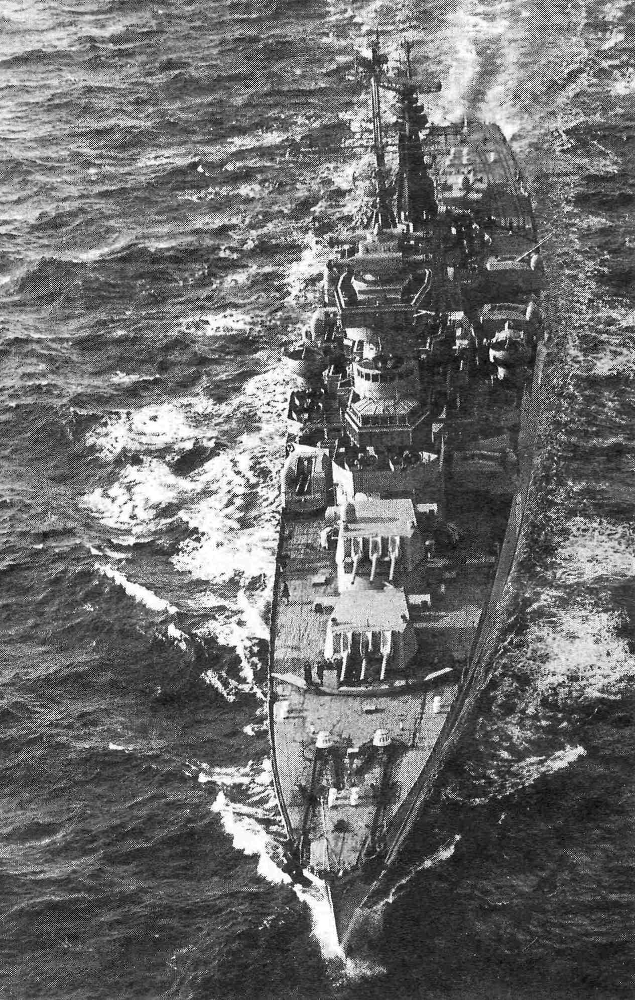
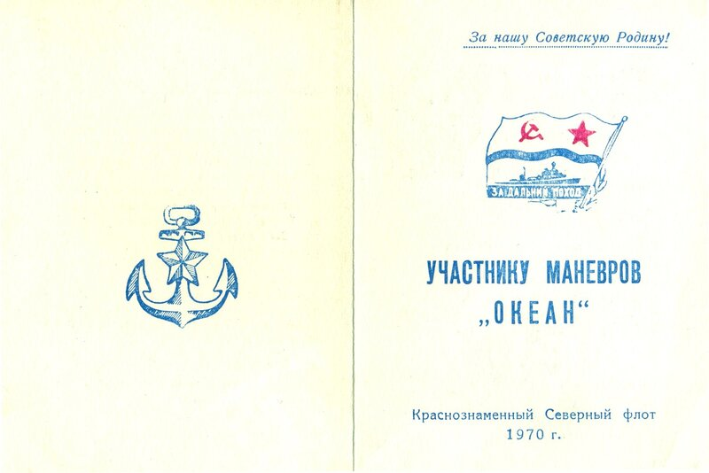
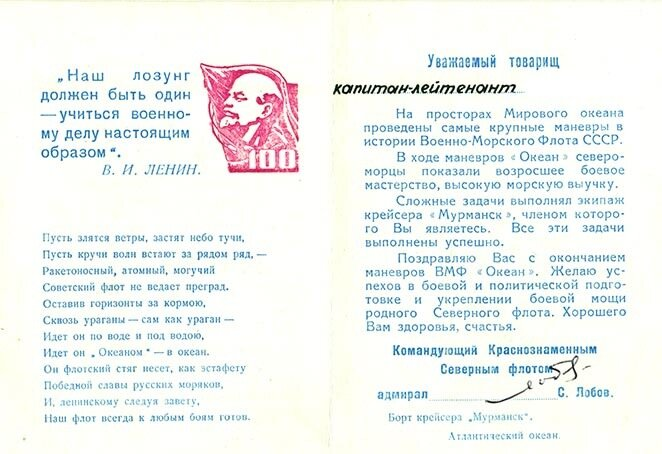

Приближается сорокалетие крупнейших маневров российского флота «Океан». Написано о них много. Но остаются детали, пока еще мало известные любителям морской истории. Об одном из эпизодов тех маневров хотелось бы рассказать.
Волею командиров я, офицер-подводник, был включен в состав походного штаба Северного флота, который размещался на борту крейсера «Мурманск». До этого мне приходилось бывать на крейсерах только во время практики, походы были недолгими, да и отношение к «практикантам» со стороны командиров было снисходительно-мягкое. Если и наказывали, то, по меркам того времени, наказание можно было считать условным. В боевом походе, да еще проходящем в рамках долго готовившихся маневров, бывать не приходилось. Прибыв на борт крейсера за сутки до выхода в море, сразу же включился в напряженную жизнь штаба, и все остальные проблемы отошли в сторону.
Крейсер был недавно отремонтирован, все механизмы работали исправно, кроме систем связи. Сильнейшие магнитные бури фактически «отключили» нас от внешнего мира сразу же после пересечения рубежа Нордкап-Медвежий. Да и погодные условия в Северо-Восточной Атлантике оказались на редкость сложными. Волнение временами достигало семи-восьми баллов. Когда море слегка успокаивалось – в небе появлялись натовские патрульные самолеты «Орион», отслеживающие каждый маневр крейсера и кораблей охранения.

Позже мы узнали, какая трагедия разыгралась в Бискайском заливе. Чтобы не пересказывать известные факты, сошлюсь на отрывок из одной из публикаций в Сети (с исправлением некоторых фактических ошибок):
«Катастрофа случилась на глубине 40 метров около 10 часов вечера. Что явилось ее причиной - сказать трудно. Как предположила потом комиссия, в седьмом энергетическом отсеке, по правому борту подводной лодки, начался пожар. Дым по системе вентиляции втянуло в рубку гидроакустиков. К тому же с первых минут вышла из строя вся радиосвязь.
На корабле немедленно была сыграна аварийная тревога. Командир приказал всплывать. Лодка выскочила на поверхность и закачалась на волнах.
Экипаж корабля во главе с командиром Бессоновым сражался на пределе возможностей. Героем в той неравной битве был каждый. Несколько часов провел один в горящем отсеке мичман Посохин. Задыхаясь от дыма, он продолжал борьбу с огнем, пока не был спасен товарищами. Врач капитан медицинской службы Арсений Соловей пожертвовал собой, отдав свой изолирующий противогаз недавно прооперированному старшине.
В полном составе погибла на посту первая смена главной энергетической установки (ГЭУ) атомохода: капитан 3-го ранга Хаславский, капитан-лейтенант Чудинов и старшие лейтенанты Шостаковский и Чугуков. Понимая, что огонь вот-вот ворвется на пульт управления, офицеры наглухо задраили дверь. Умирая, они успели заглушить реактор, посадив компенсирующую решетку на концевики.
Расчет ГЭУ ценою своих жизней сделал главное - предотвратил возможный тепловой взрыв. Бывшие в других отсеках подводники слышали по внутрикорабельной связи их последние слова: «Нечем дышать. Кончается кислород. Прощайте, ребята, не поминайте нас лихом!..»
Тем временем командир корабля, капитан 2-го ранга Бессонов пытался сообщить о случившемся в Москву, организовать борьбу с быстро распространявшимся пожаром. Несколько раз моряки спускались в горящий центральный пост, чтобы ввести в строй радиостанцию, но все попытки оказывались неудачными.
Много людей скопилось в восьмом отсеке. Их выводили на палубу через верхний люк. Концентрация окиси углерода в отсеке к тому времени была уже смертельной: последних выносили на руках, они были в агонии и состоянии клинической смерти. И хотя товарищи пытались их спасти, делая искусственное дыхание, из шестнадцати вынесенных наверх никого спасти не удалось. Еще четырнадцать подводников навсегда остались в горящих отсеках.
На центральном посту включилась сирена - сработала аварийная защита реакторов и турбин. Лодка осталась без хода и без электроэнергии.
К-8 медленно раскачивалась на волнах Атлантического океана. Проходившему невдалеке канадскому судну подали сигнал бедствия - пять красных сигнальных ракет. Но судно описало вокруг лодки дугу и удалилось, скрывшись за горизонтом.
Утром 10 апреля на горизонте показалось другое судно. Снова дали сигнальные ракеты. К терпящим бедствие морякам подошло болгарское торговое судно «Авиор». Немедленно через Варну в Москву ушла радиограмма. Теперь К-8 могла рассчитывать на помощь. Вопрос был в другом: успеют ли спасательные силы прийти на помощь подводной лодке? Смогут ли подводники дождаться их прихода?»
Адмирал Лобов принял решение идти на “Мурманске» в район аварии. Специалисты БЧ-5 крейсера выжимали все силы из энергетической установки корабля. После смены их окатывали водой и направляли к доктору. Шторм мешал ходу, волны перекатывались через боевую рубку крейсера, но все равно удавалось держать скорость больше 30 узлов. Одновременно была дана команда всем кораблям Северного флота, находившимся в районе, следовать к аварийной лодке. Однако до ближайшего к месту аварии гидрографического судна «Харитон Лаптев» было более 400 миль. К тому же шторм, потрепавший нас в Северо-Восточной Атлантике начал спускаться к югу и вскоре непогода захватила и район катастрофы. Несмотря на это, удалось часть экипажа переправить на подошедшие суда. К исходу 11 апреля на борту ПЛ оставалось 22 человека во главе с командиром и старпомом.Ночью в район бедствия прибыло гидрографическое судно Северного флота «Харитон Лаптев». С него начали вести регулярный прямой доклад об обстановке. Попытки взять аварийную лодку на буксир не увенчались успехом. Заведенный буксирный трос порвало очередной волной. Решено было дождаться утра... В 7 часов утра 12 апреля на «Мурманск» пришла телеграмма, в которой сообщалось, что в 6 часов 13 минут отметка ПЛ на экране РЛС исчезла, акустики доложили о двух мощных гидравлических ударах. Попытка спасти остававшихся на палубе и на мостике лодки людей не увенчалась успехом. Шторм разметал спущенные на воду шлюпки. Удалось найти тело командира, однако очередная волна отбросила его под винты кораблей спасателей.
Поднятые фрагменты тел нескольких погибших моряков разместили в холодильных камерах «Харитона Лаптева». Температура наружного воздуха была выше 25 градусов. Извлеченные из холодильников продукты начали портиться. Чтобы не срывать поставленные перед флотом задачи, адмирал Лобов принял решение захоронить останки погибших моряков в море с отданием воинских почестей.
На К-8 среди погибших 52 подводников были два моих товарища-однокашника: капитан-лейтенант Анатолий Поликарпов и капитан-лейтенант Николай Ясько. Вечная им память.
Маневры продолжались по скорректированному плану.
По их завершении мы получили вот такие памятные листки:

